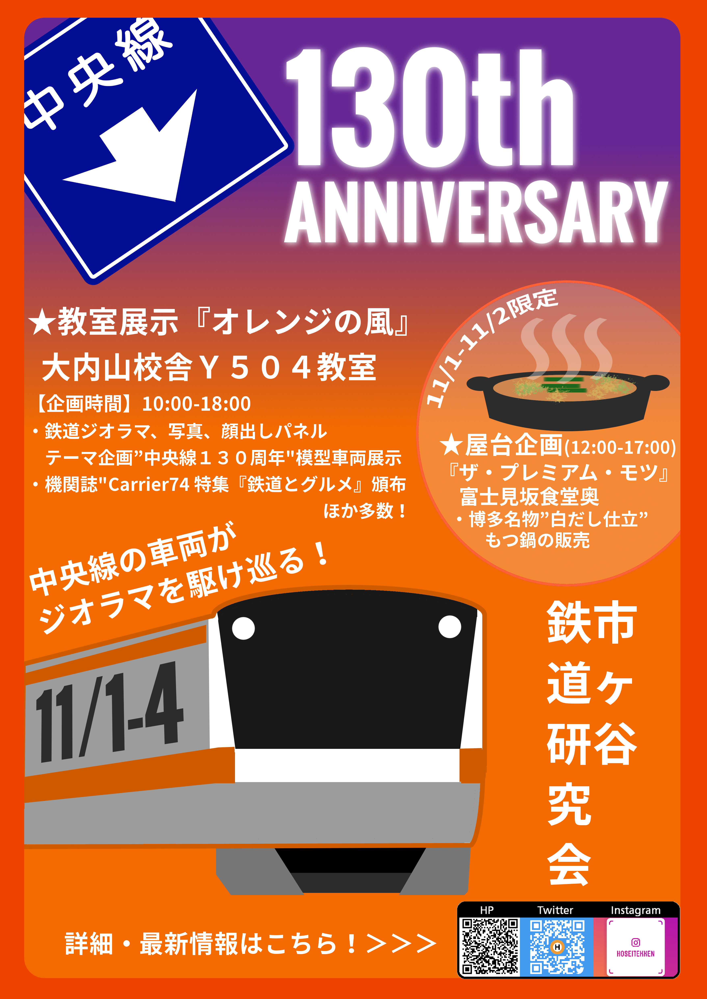

2019/10/23 更新
私達鉄道研究会は今年も自主法政祭に参加致します。
模型・プラレール・写真展示、シミュレーター体験、機関誌頒布...に加えて、屋台にも出店いたします！
屋台では2018年夏合宿で行った九州北部の名物グルメ、もつ鍋を販売いたします！
皆様お誘い合わせのうえ、ぜひご来場ください！
■日にち 2019/11/1（金）～4（月）
■時 間 本ブース：10:00～18:00（最終日は～16:00）
屋台店 ：12:00頃～17:00頃
※屋台は金土のみ/当日分がなくなり次第終了いたします。
11/4（月）は最終日につき16時まで・開場時刻は
多少前後する場合があります。ご了承ください。
■場 所 本ブース：法政大学市ヶ谷キャンパス 大内山校舎 Y504教室
屋台：富士見坂校舎地下1階 富士見坂食堂
■展示内容
・鉄道模型（Nゲージ）展示
・プラレール展示
・鉄道写真展示
・機関誌「Carrier」頒布
新刊「Carrier74 特集：鉄道とグルメ」900円
バックナンバー 「Carrier73・72」800円
→機関誌についての詳細はこちらへ！
|

| |
|

|